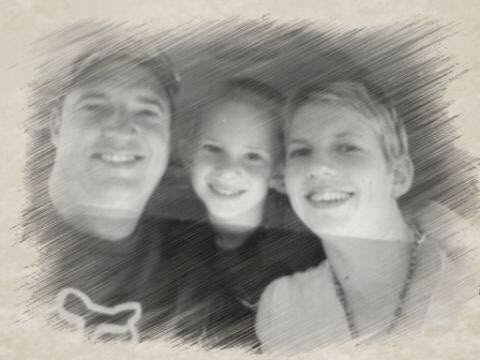
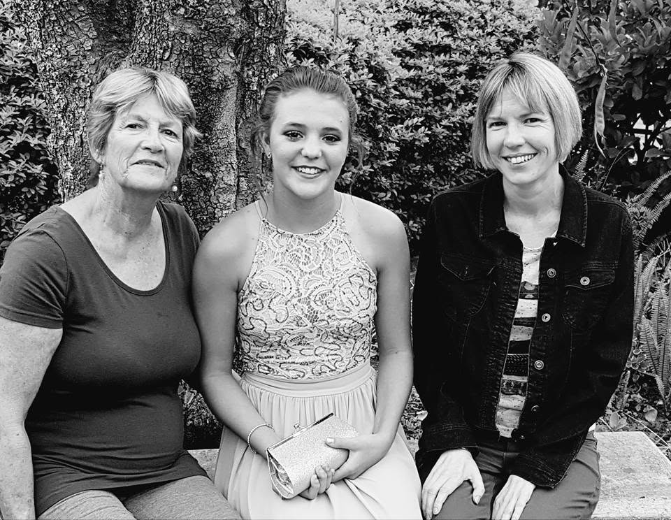
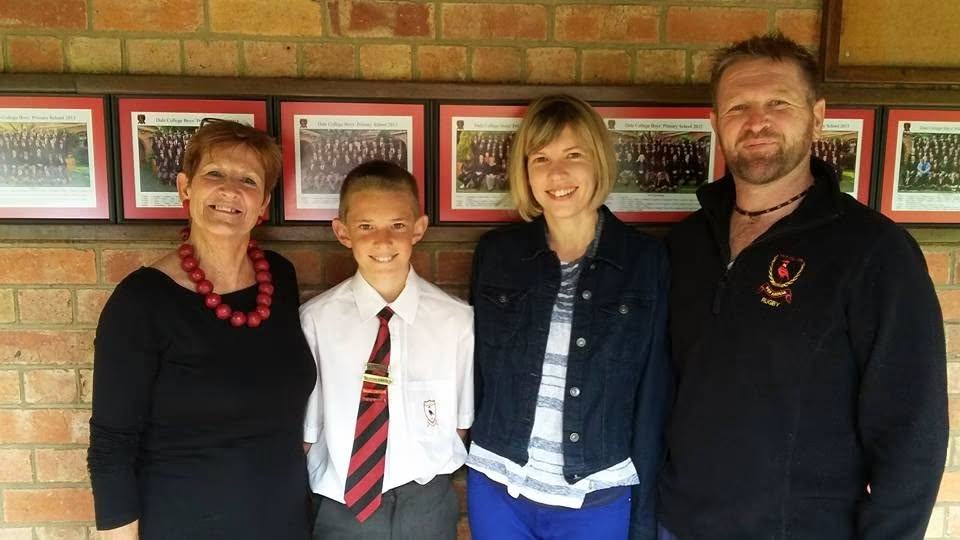

Keep the movement going
Share your KathRUN
Share your effort or tell someone why you're taking part. Every conversation can help make ALS/MND more visible.
Kath with family





Kath with family, in moments shared together.
Every mile matters
Take part in KathRUN.
Every form of movement counts. Choose a challenge that feels right for you.
How to take part